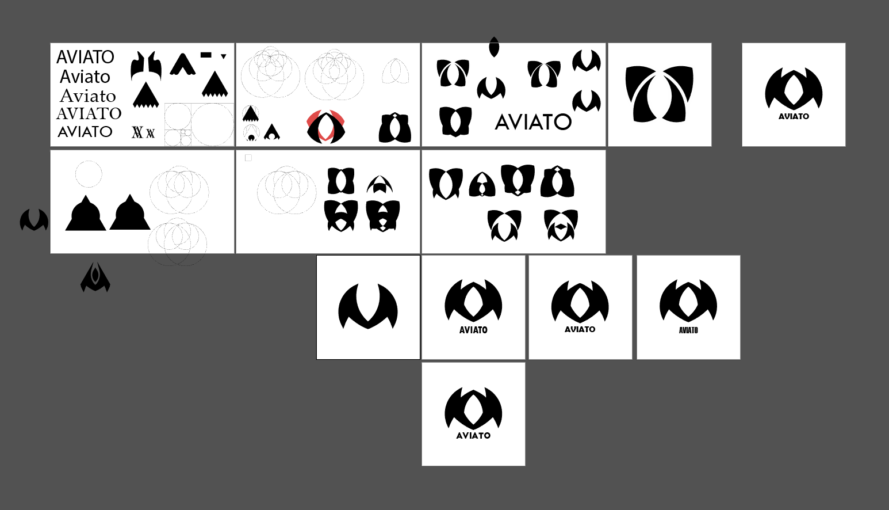
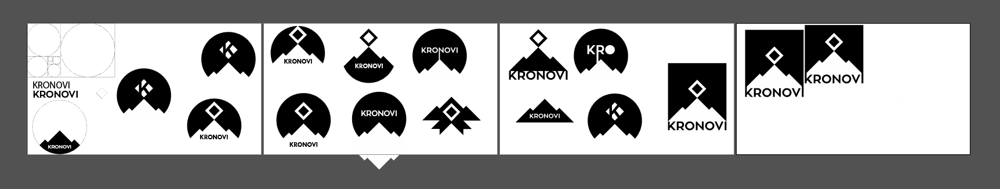
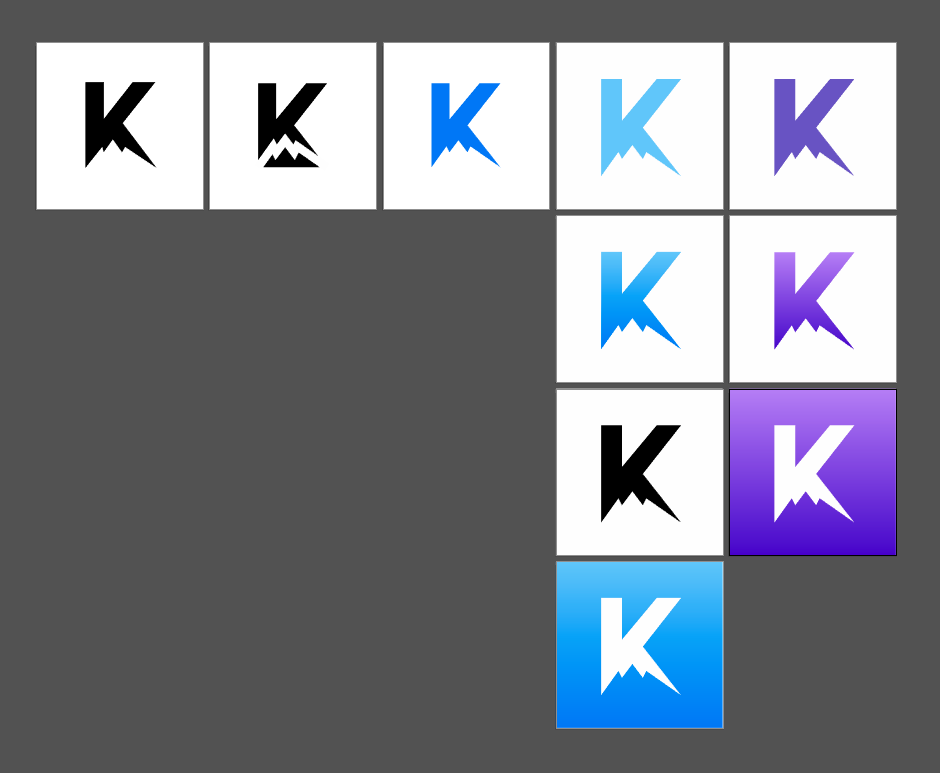
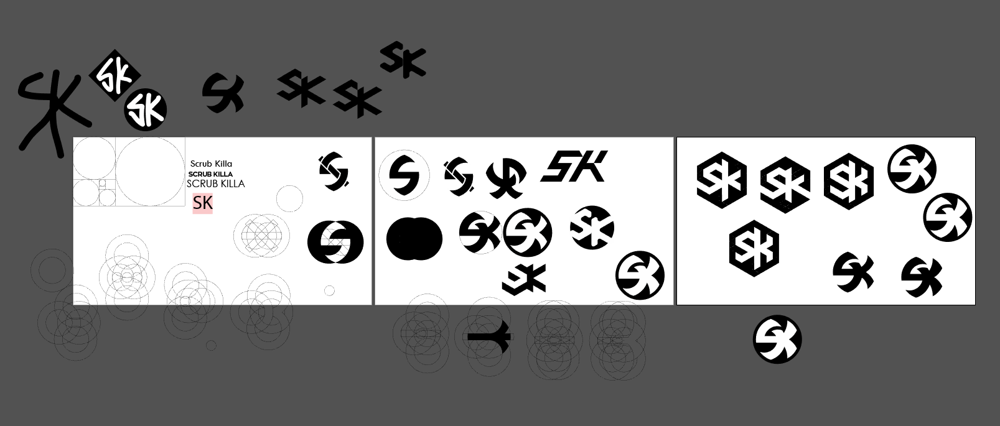
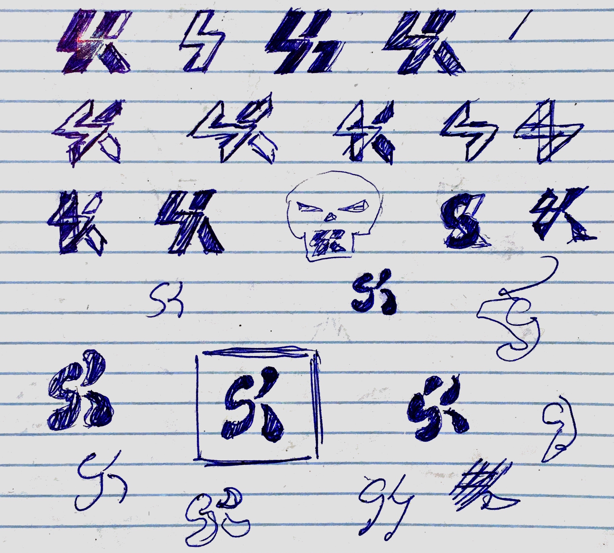
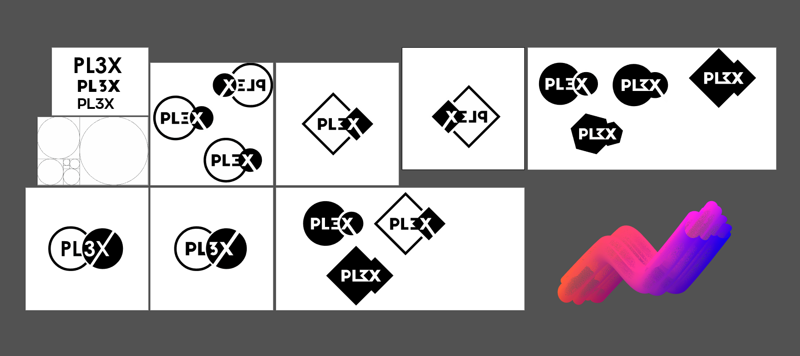

Logo Designs Various logos I've made
All of these logos were made for fun for Rocket League players and groups.
This logo was designed for (and is currently used by) professional Rocket League player Mariano Arruda. The design incorporates portions of his username, SquishyMuffinz.
The initial goal was to make a muffin-colored S and M. The darker color for the M was to make it feel more like the wrapper for the whole muffin shape, while the S was a light brown representing the muffin top.
The next step involved reworking the color and S-shape. The color was switched to a gradient blue to match the gaming organization Mariano plays for, Cloud9. As for the S-shape, it not only looked too much like a mushroom, but also the lack of white space made the letterform less readable. Because of this, the S's curves were increased and the shape was made to look more lumpy like a muffin.

The final step was to improve the left-right balance of the logo, which I did by resizing/repositioning the logo and increasing the length of the top of the S.
Aviato, a group of Rocket League players (not the Silicon Valley program), currently uses this logo. From the start, the logo was to include some form of flight to emphasize the "aviation" aspect of the group's name while also maintaining a sporty look (since Rocket League is an eSport). All the artboards that led to the final result can be seen below. This design required a lot of potential designs since there are many ways to interpret the concept of flight.
Here are the final 3 versions of the logo. A purple-blue gradient with angled zig-zag shapes was chosen to represent hills and an early morning sky.
This was a logo concept for professional player Cameron Bills, also known as Kronovi. His symbol is a mountain, so my first drafts looked at ways to combine Cameron's username, Kronovi, with a simple mountain range shape.
Since all of the drafts above seemed overly complex and unbalanced, I shifted towards a monogram to keep the design simple. The mountain in the K's white space, combined with a cool and bright gradient, made the design readable as a mountain range under a "K" rather than an odd-looking "V" shape.
Here are the final versions. Both blue and purple worked well, where purple compromised some of the sky-like aspect of the K for increased color contrast.
This design was for professional Rocket League player Kyle Robertson, a.k.a. Scrub Killa. The initial design was meant to be sharp and edgy to match the "killa" part of Kyle's username. The version encompassed by a circle included a scythe shape to further the connection.
Unfortunately, none of the designs above seemed readable at a distance, and I didn't feel like my designs were improving. At this point, I decided a new approach was needed, so I began sketching my ideas on paper instead.
The one outlined by a square seemed the most readable and balanced, so I converted it into a vectorized logo. This final design incorporates an S and K monogram with deep red blood-splatter shapes to maintain the "killer" theming. Below are the two final versions, the first being inverted for dark/colored backgrounds.
This is a logo design for a friend who plays professionally for Triple Play eSports. The initial design was part of an experiment with golden-ratio based logos: the initial shape was made with 3 squared, the largest (middle) one being about 1.618 times larger than the other two. The design was then shifted from a blue/purple to a gray with a green play icon to match the Triple Play eSports theme.
This was one of my earlier logo designs for another friend who plays Rocket League, Plex. Since Rocket League is an eSport where a ball is launched around in a stadium, the design incorporates a ball (the smaller circle) and motion lines (which also act as the "E" in Plex). The circle design reminded me of Mastercard's logo, and this influenced the final color choice and the design with the large solid circle.
